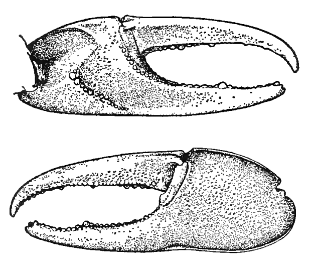

Fiddler Crabs
Home
Blog
Uca virens
Salmon & Atsaides (1968)
Species page
Reference
All Scientific Drawings

This drawing is from Salmon & Atsaides (1968). It is the one of the images accompanying the type description of
Uca virens,
showing the inner and outer surface of the major claw.